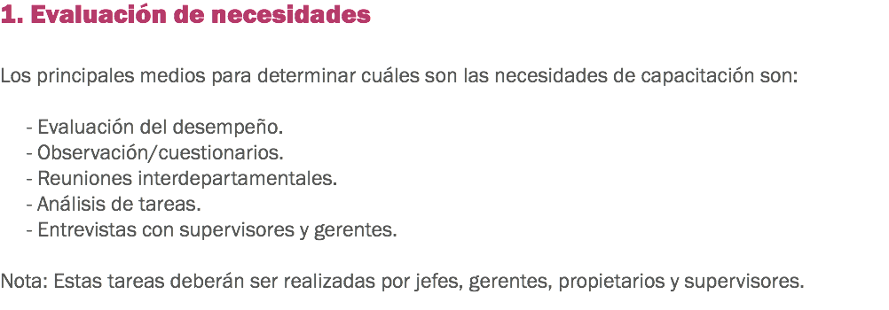
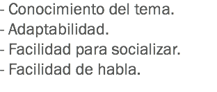

Motivar y retener al personal de hotelería


Capacitación y desarrollo del personal


![Proceso de capacitación ¿Consideras importante dar capacitación al personal?
La capacitación es una herramienta fundamental para la buena administración de una empresa, su función es fomentar y desarrollar en los empleados las habilidades que necesitan para realizar eficazmente sus labores. Además, la capacitación ofrece la posibilidad de mejorar la eficiencia del trabajo de la empresa, permitiéndole que se adapte a las nuevas circunstancias del medio. La capacitación proporciona: Aptitudes, conocimientos y habilidades. El proceso de capacitación es:](images/u897-18.png)






x


Haz clic en Regresar para volver al inicio.